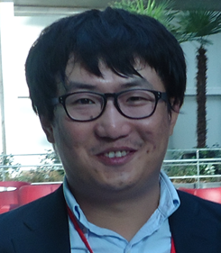

Images of INESS 2016
Previous
Next
For citizens of the CIS countries, United Kingdom, United States of America, Germany, France, Italy, Malaysia, Netherlands, United Arab Emirates, South Korea, Switzerland, Spain, Belgium, Hungary, Monaco, Singapore, Australia, Norway, Sweden, Finland and Japan entering and leaving Kazakhstan without visas in the period from 16 July 2015 to 31 December 2017.
In accordance with the Governmental Regulation №483 from June 26, 2015 to the amendments and additions to the Decree of the Government of the Republic of Kazakhstan dated January 21, 2012 №148 citizens of the Russia, United Kingdom, United States of America, Germany, France, Italy, Malaysia, Netherlands, United Arab Emirates, South Korea, Switzerland, Spain, Belgium, Hungary, Monaco, Singapore, Australia, Norway, Sweden, Finland and Japan are exempt from visa requirements for visits up to fifteen calendar days from the moment of crossing the state border between July 16, 2015 to December 31, 2017.
Registration of citizens of these countries is carried out by the Border Service of the National Security Committee through affixing date stamp in the “registration” migration card.
Please, check information about visa to visit conference from official web-site of Ministry of Foreign Affairs Republic of Kazakhstan or local Embassy of the Republic of Kazakhstan.
For additional information to request a visa invitation letter or any other information, please contact by e-mail: iness@batterykazakhstan.com
AIRPORT
Almaty International airport information, www.alaport.com
EMERGENCY TELEPHONE NUMBERS
Fire: 101
Police: 102
Ambulance: 103
Interteach: +7 (727) 3 200 200 (multilanguage personal – Kazakh, Russian, English, Français, Español). Accepts insurence from many companies
Recommended 4-5 star hotels for visitors:
Best Western PLUS Atakent Park Hotel – the nearest 4 star hotel. Distance to KazNU up to 5 minutes depending on traffic by taxi, on foot 10-15 minutes. When you are booking the hotel Atakent Park Hotel, please add the location name: al-Farabi KazNU.
On-line booking – www.bestwesternrussia.ru, multilingual staff, credit cards accepted. Price from 150 USD/night (for participants price will be lower).
Kazakhstan – 4 star hotel. The building constructed to stand an earthquake that measures 9.0 on the Richter scale. It is a famous landmark all over Almaty, and serves as a symbol of the city. It is also the eighth tallest building in all Kazakhstan. Distance to KazNU up to 20 minutes depending on traffic by taxi.
On-line booking – www.kazakhstanhotel.kz, multilingual staff, transfer, credit cards accepted. Price from 70 USD/night.
Rahat Palace – the first 5 star hotel in Central Asia. Distance to KazNU up to 5 minutes depending on traffic by taxi.
On-line booking – www.rahatpalace.com, multilingual staff, credit cards accepted. Price from 150 USD/night.
Holiday Inn Almaty – 4 star hotel. Distance to KazNU 5-10 minutes depending on traffic by taxi.
On-line booking – www.holidayinn.com, multilingual staff, credit cards accepted. Price from 70 USD/night.
The 4th International Conference on Nanomaterials and Advanced Energy Storage Systems (INESS-2016) organized by the Nazarbayev University (NU), the Al-Farabi Kazakh National University (Al-Farabi KazNU), Institute of Batteries (IoB), National Laboratory Astana (NLA) and Nazarbayev Research and Innovation System (NURIS) to be held on August 11-13, 2016 in Almaty at the Al-Farabi KazNU and cordially invite you to participate!
Al-Farabi Kazakh National University
KazNU is the oldest classical university of the Republic established by the Decree of the Kazakh Regional Committee (KRC) office dated November 13, 1933. One year after Kazakhstan’s 1990 declaration of independence, the name was changed to Al-Farabi Kazakh State University. In 2001, the government classified it as a “national” university. More than 20000 students, graduates and PhD students study at KazNU, and there are more than 2500 faculty members working at KazNU, including 400 doctors of science, professors and more than 800 candidates of science and associate professors. Like other universities founded under the Soviet system, it is highly centralized. (Wikipedia)
Almaty city, Kazakhstan
Almaty is the largest city in Kazakhstan, with a population of 1,703,481 people, comprising 9% of the country’s total population. Almaty is considered a World City with a Beta classification according to GaWC. It served as capital of the Kazakh state in its various forms from 1929 to 1997, under the influence of the then Soviet Union and its appointees. Alma-Ata was the host city for a 1978 international conference on Primary Health Care where the Alma Ata Declaration was adopted, marking a paradigm shift in global public health. In 1997 the government relocated the capital to Astana in the north of the country.
Almaty continues as the major commercial and cultural centre of Kazakhstan, as well as its biggest population center. The city is located in the mountainous area of southern Kazakhstan in the foothills of the Trans-Ili Alatau at an elevation of 2,300–3,000 feet (700–900 m).
Final Program of INESS-2016
Dear Participant!
Thank you very much for your participation and valuable contribution to our Conference. We hope you had enjoyable time in Almaty, Kazakhstan and efficient time at Al-Farabi Kazakh National University. We will work on further development of our collaboration for the best education and research.
We are looking forward to seeing you again.
Yours sincerely,
Prof. Zhumabay Bakenov and Institute of Batteries, Advanced Energy Storage Systems and Functional Nanomaterials Research Group of Nazarbayev University, National Laboratory Astana, Nazarbayev University Research and Innovation System, and Al-Farabi Kazakh National University.
The INESS 2016 topics cover the following and related areas:
The Conference will include a session with workshops and lectures on commercialization and patenting by the Nazarbayev University and other specialists – a good chance to check if your commercialization is going in an effective path!
Full length papers presented at the Conference will be published as Proceedings in high-impact factor journal (Indexed by Elsevier: SCOPUS) after each paper is thoroughly reviewed and (if any) satisfactorily modified according to the reviewer comments.
| Prof. Masataka Wakihara
Emeritus Professor, Department of Applied Chemistry, Graduate school of Science and Engineering, Tokyo Institute of Technology (Japan). Lecture title: Nonflammable All-Solid Polymer Lithium Ion Battery at Higher Temperatures |
|
|
|
Prof. Jean-Pierre Pereira-Ramos Professor, Director of 2nd class research – CNRS, Group Electrochemistry and Spectroscopy of Materials – GESMAT (France). Lecture title: The γ-V2O5 phase: a new high voltage cathode material for sodium-ion batteries |
|
|
Prof. Kiyoshi Kanamura Professor, Department of Applied Chemistry, Graduate school of Urban Environmental Science, Tokyo Metropolitan University (Japan). Lecture title: Investigation of electrochemical properties of LiMnPO4 and Fe-substituted LiMnPO4 by single particle measurement |
|
|
Prof. Nina V. Kosova Professor of Institute of Solid State Chemistry and Mechanochemistry, Electrochemistry, Nanotechnology, Solid-state Chemistry (Russia). Insertion compounds prepared via mechanochemically assisted solid state way for advanced sodium- and lithium-ion batteries |
|
|
Prof. Hirokazu Munakata Professor, Department of Applied Chemistry, Graduate School of Urban Environmental Science, Tokyo Metropolitan University (Japan). Lecture title: Development of non-humidified intermediate-temperature fuel cells using ionic liquid / porous polyimide composite membranes |
|
|
Dr. Sigita Trabesinger Project Leader Electrodes and Cells at Paul ScherrerInstitute, Switzerland. Li-S (Lithium Sulphur) battery, Silicon negative electrodes, Li-air batteries, Carbon materials (Switzerland). Lecture title: Comparative evaluation of battery chemistries
|
|
|
Prof. Sung-Soo Kim Associate Professor of Graduate School of Energy Science and Technology, Chungnam National University (Korea) Lecture title: Microstructures and electrochemical properties of Si-M (M : Cr, Ni) as alloy anode for Li secondary batteries |
|
|
Prof. Sergey Lee Chief Executive Officer of LLC SuperOx Japan (Japan) Lecture title: Development of second generation of high-Tc superconducting tapes (2G-HTS) at SuperOx for power generation, transmission and energy storage applications |
|
 |
Dr. Yongguang Zhang Assistant Professor of Hebei University of Technology, Research Institute for Energy Equipment Materials (China). Lecture title: Facile synthesis of Fe3O4 / C nanocomposites as anode materials for lithium-ion batteries
|
|
Prof. Thierry DJENIZIAN
Head of Flexible Electronics Department Lecture title: Enhanced electrochemical performance of porous electrodes for all-solid-state Li-ion microbatteries
|
For future sponsors and exhibitors, you can register your company by sending us email to iness@batterykazakhstan.com
Registration fee ($200) includes basic stand, coffee-break and lunch:
Two participant registrations are included with your booked booth.
The basic stand package includes:
Booth Installation:
You may start your booth installation on Wednesday evening, 10 August from 15:00-18:00 or Thursday morning, 11 August between 8:00-9:30.
Exhibition Hours:
Thursday (August 11) 9:30-17:00
Friday (August 12) 9:30-16:00